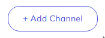
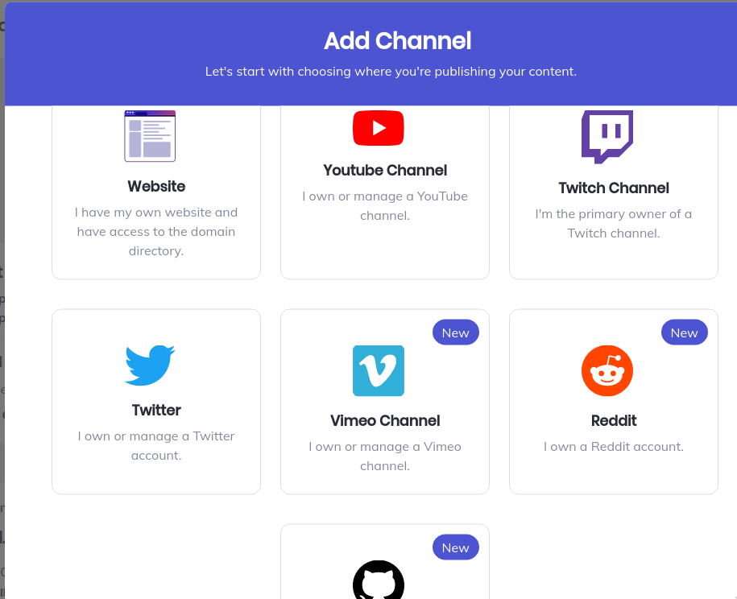
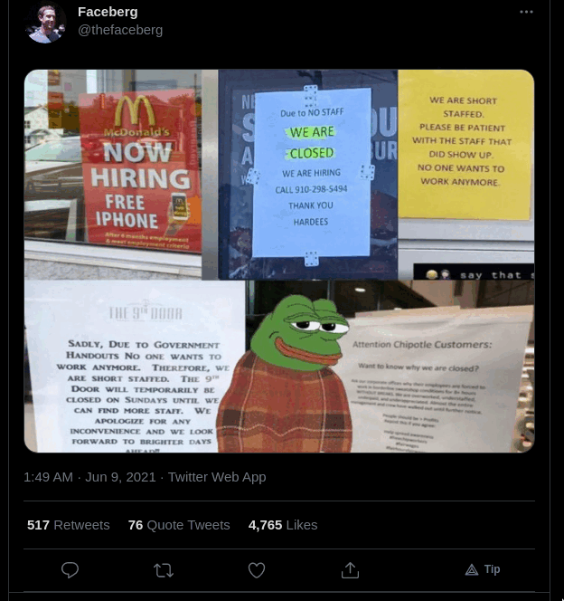

What is the  Basic Attention Token?
Basic Attention Token?
The Basic Attention Token (BAT) is a cryptocurrency token associated with the Brave Browser.
You might want to consider enrolling any and all sites you have on the internet into their project which allows you to earn some of their token based on how many Brave users view your website. It also enables Brave users to donate BAT directly to you.
You can receive these donations in BAT itself, or in another cryptocurrency of your choosing.
Explanation of the BAT system
In the Brave Browser, all ads are automatically blocked. Brave users however, are given the choice to opt into an optional ads system to view occasional notification ads instead and if they do, they are paid some amount of BAT monthly for how many ads they view. At the end of the month, depending on their settings, Brave users either have their BAT automatically donated to the sites/channels/accounts they spent the most time on, or they can hold onto their token to give away as they please.
Why you might not want to enroll...
Unlike Bitcoin and Monero, BAT is a token organized by a company, and as such, it has to comply with know-your-customer regulations. What that means for you is that to get a payout in BAT, you must have a custodial cryptocurrency wallet with either Gemini or Uphold, the two services they are interfaced with. You can move your payouts elsewhere when you want, but those sites require real-world identification.
Enrolling in BAT is thus not an option for people who want to be on the internet totally anonymously. For those for which this is not an issue, however, enrolling your site in the Basic Attention Token system, even if you do not use Brave yourself, is an easy, free and no risk thing that you can only gain from.
Enrolling in the System
Create a Publisher Account with BAT
Go to publishers.basicattentiontoken.org and sign up to create a publisher account.
Add a new website/channel
Once you log in, you can easily create a new Brave channel.
As this will show you, you can add your website to the system to receive donations there, but you can also add a YouTube or Twitch channel, a Github profile or even a R*ddit or Tw*tter account.
Once you select what to add, you will have to verify that you own that website/channel via various methods. You can add DNS settings to your registrar for a website, which is generally the most consistent way for websites.
Using Uphold or Gemini for payouts
In order to properly receive payouts, you will have to create an account either with Uphold or Gemini which again are custodial cryptocurrency wallets, meaning that while you have your money on their platform, it isn't really yours, so it's a good idea to transfer it off when you accumulate a decent amount.
Choose either Gemini or Uphold, create an account with them and follow the directions on the BAT site to link them.
Note that right now, Gemini might be the better choice here. Uphold inexplicably can't send funds to a Segwit wallet as it is right now which is the type that Electrum uses. So if you select to get your payouts in Bitcoin, this might be an issue.
What does this look like in Brave?
Donating to websites
Once you have your website connected, Brave users can click on the BAT icon () by their URL bar to donate to you.
Here is how this looks:
Donating to individual accounts
Here is an example of what it looks like to have an individual social media site interfaced. In the picture below, a "Tip" button appears in the bottom right of this image.
Tip buttons will appear on many other social media sites, for example Github commits, projects and comments by users.